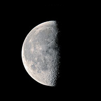

What day is it?
New Moon
When the moon is in this phase, we cannot see any part of it. This is because the moon is positioned exactly between the sun and us, the earth.
Waxing Crescent
This comes after the new moon. In this phase, we can start to see part of the moon being lit up by the sun.
First Quarter
At this phase, the moon is at a 90 degree angle with respect to the earth and sun. This is why we see half of the moon lit up by the sun.
Waxing Gibbous
At this phase, most of the moon is lit up by the sun, so we see almost a full moon.
Full Moon
In this phase, we see the entire face of the moon facing us because the earth, sun, and moon are all in alignment.

Waning Gibbous
After the full moon, the part of the moon lit up by the sun starts to decrease. This is why we see a little bit less than a full moon in this phase.

Third Quarter
Similar to the first quarter, the moon is at a 90 degree angle with respect to the earth and sun.

Waning Crescent
We only see a little sliver of the moon lit up by the sun in this phase. We are almost at a new moon again.